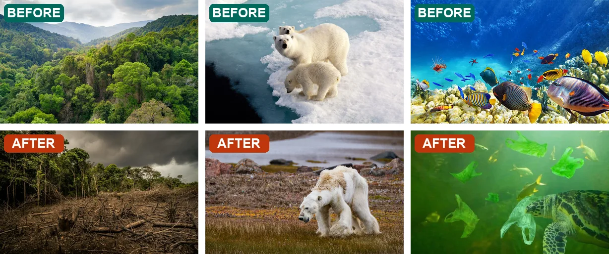
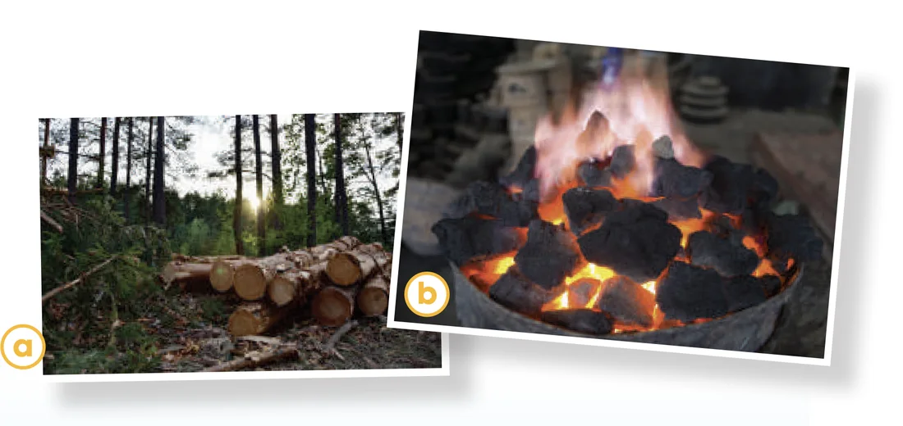
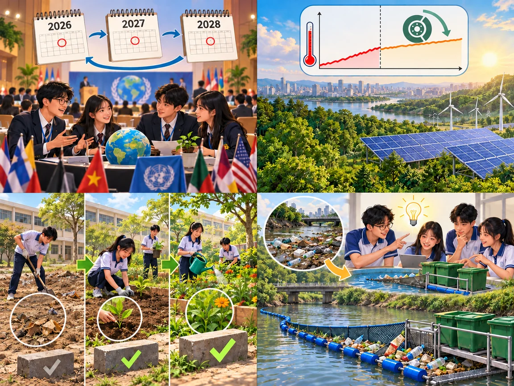
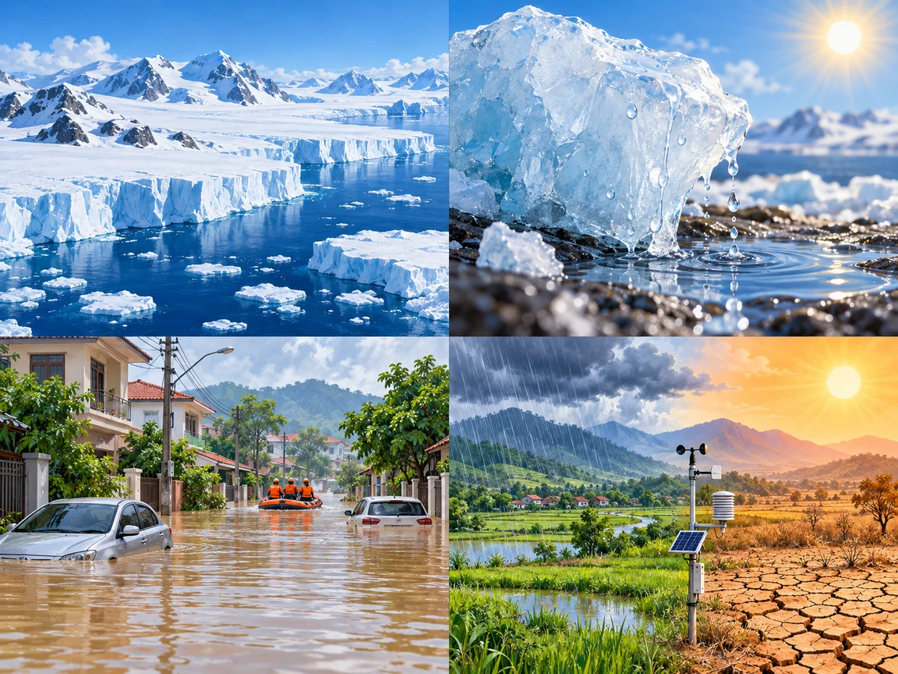
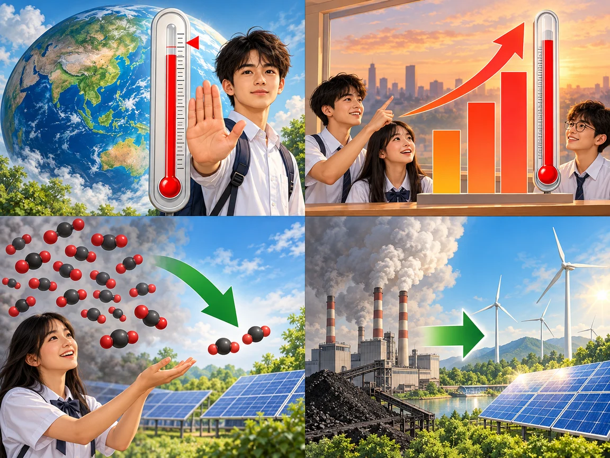
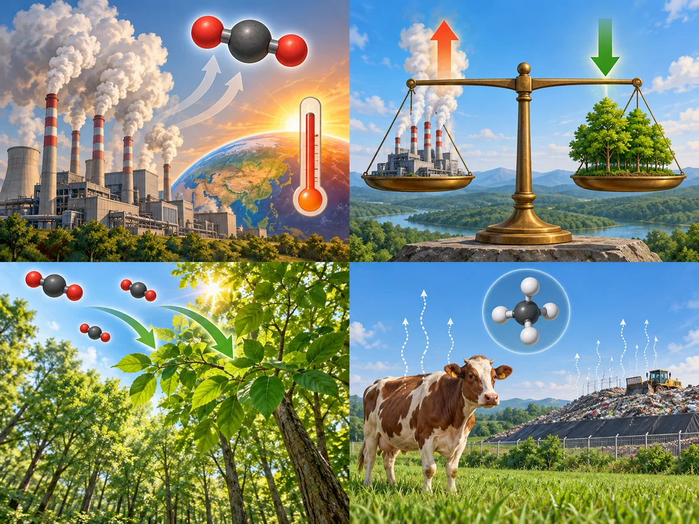
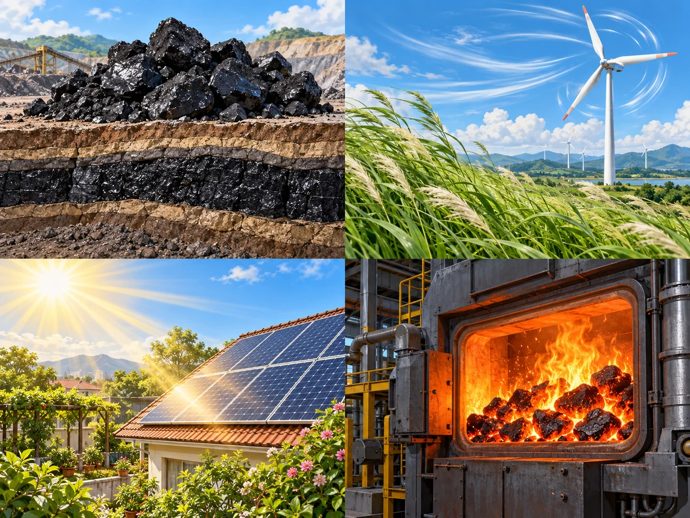
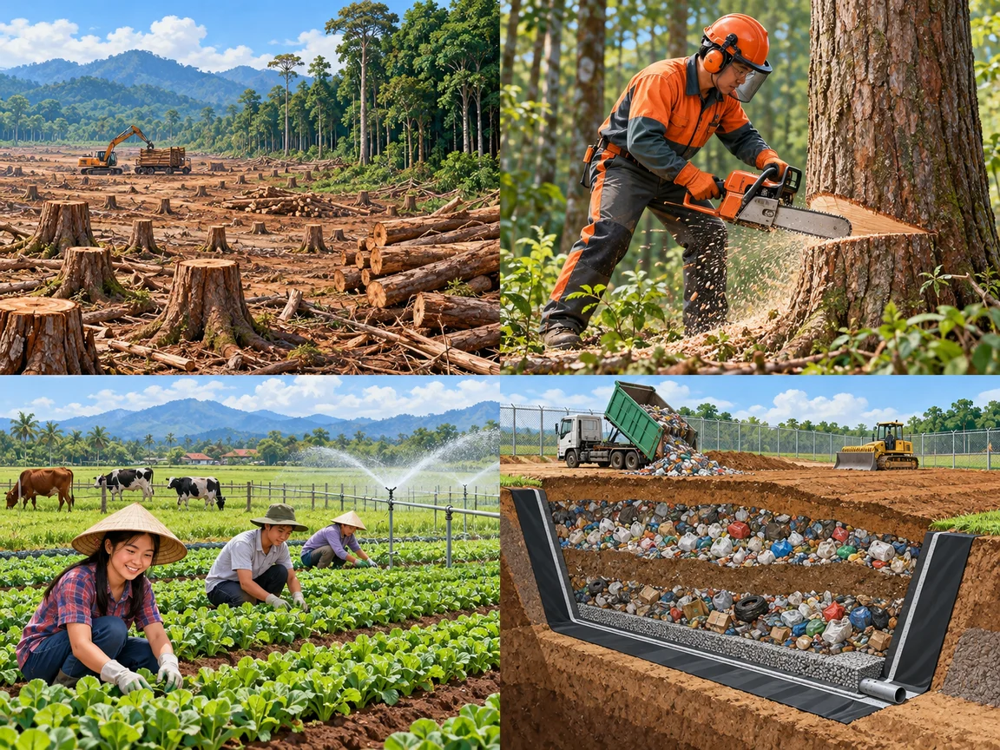
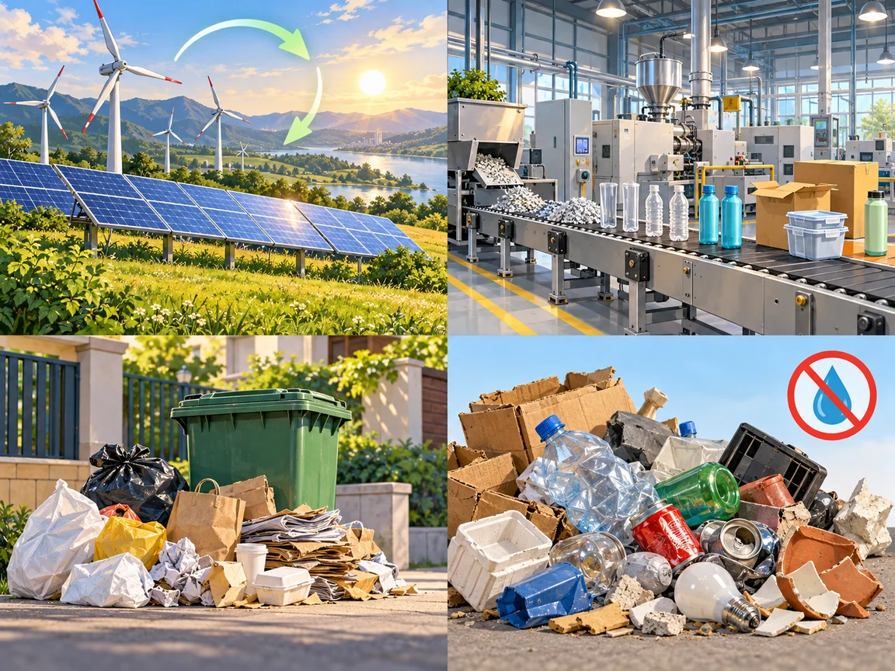
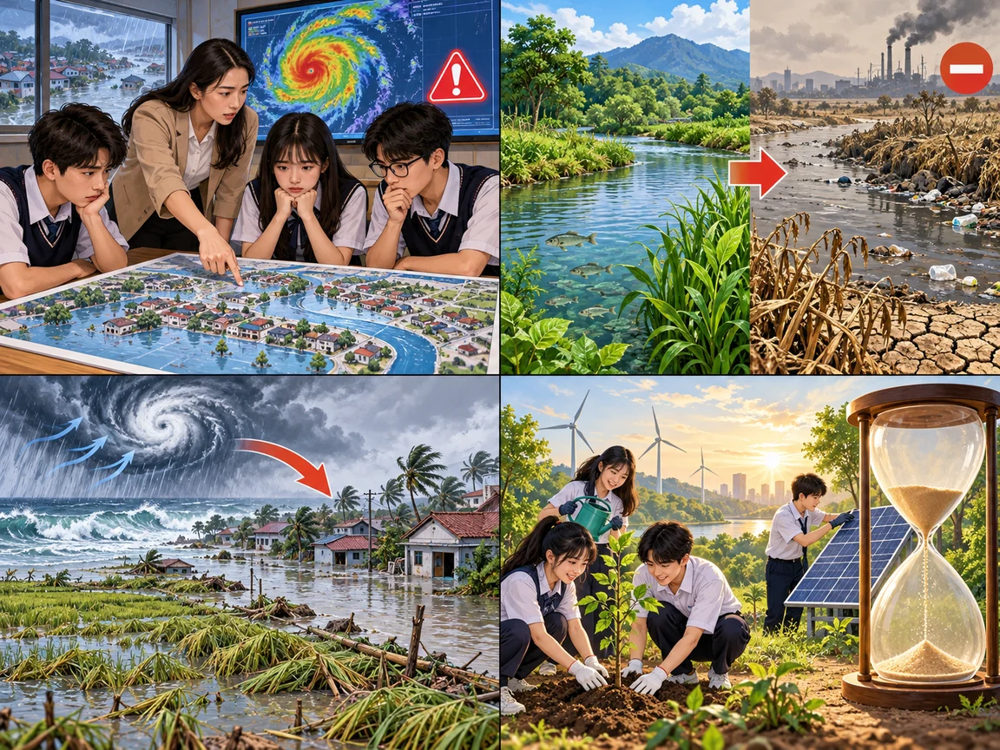

The UN Climate Change Conference
Lesson 3 — Reading
5Five stops in 45 minutes
- 🔄
Before & after
Warm-up
6 min - 🌲
Before reading
Environmental problems
5 min - 📖
The article
Tasks 2–4
25 min - 💬
Discuss
What should we do?
6 min - ✅
Wrap-up
Homework
3 min
Warm-up
Describing game · before and after
6 minutesWhat has changed?

Before, there was / were … · Now, … · It has become …
Before reading
Environmental problems
5 minutesWhat problems do you see?

Can farming harm the environment? How does deforestation cause global warming? a. deforestation · b. burning coal — both add CO₂ to the air

leader
(n) /ˈliːdə(r)/ người lãnh đạo
annual
(adj) /ˈænjuəl/ hằng năm COP is an annual event.discuss
(v) /dɪˈskʌs/ thảo luận World leaders discuss climate change.
climate change
(n phr) /ˈklaɪmət tʃeɪndʒ/ biến đổi khí hậu
goal
(n) /ɡəʊl/ mục tiêu
limit
(v, n) /ˈlɪmɪt/ hạn chế; giới hạn
temperature
(n) /ˈtemprətʃə(r)/ nhiệt độrise
(n, v) /raɪz/ sự gia tăng; tăng lên A temperature rise → temperatures rise.reduce
(v) /rɪˈdjuːs/ giảm, làm giảm
emission
(n) /ɪˈmɪʃn/ sự phát thải; khí thải Countries need to reduce CO₂ emissions.balance
(n) /ˈbæləns/ sự cân bằngremove
(v) /rɪˈmuːv/ loại bỏ, lấy đi Trees remove CO₂ from the atmosphere.release
(v) /rɪˈliːs/ thải ra, giải phóng
coal
(n) /kəʊl/ than đáplanet-warming CO₂ emissions
(n phr) /ˌplænɪt ˈwɔːmɪŋ ˌsiː əʊ ˈtuː ɪˈmɪʃnz/ khí thải CO₂ làm Trái Đất nóng lêncoal plant
(n phr) /ˈkəʊl plɑːnt/ nhà máy nhiệt điện than Countries should stop building new coal plants.switch to
(v phr) /swɪtʃ tuː/ chuyển sang Switch to clean sources of energy.
deforestation
(n) /diːˌfɒrɪˈsteɪʃn/ nạn phá rừngcut down
(phr v) /kʌt daʊn/ chặt, đốn cây Do not cut down forests.effective
(adj) /ɪˈfektɪv/ hiệu quả, có hiệu quả Clean energy is an effective solution.solution
(n) /səˈluːʃn/ giải phápmethane
(n) /ˈmiːθeɪn/ khí mê-tan (CH₄)farming activities
(n phr, plural) /ˈfɑːmɪŋ ækˈtɪvətiz/ các hoạt động nông nghiệplandfill waste
(n phr) /ˈlændfɪl weɪst/ rác thải ở bãi chôn lấp
production
(n) /prəˈdʌkʃn/ sự sản xuất The production of goods uses energy.
best last chance
(n phr) /best lɑːst tʃɑːns/ cơ hội tốt nhất và cuối cùngslow
(v) /sləʊ/ làm chậm lại We must act now to slow global warming.make progress
(v phr) /meɪk ˈprəʊɡres/ đạt tiến bộ We can make progress on climate change.While reading
The article · Tasks 2–4
25 minutesA, B or C?
A. History of COPs
B. Main causes of global warming
C. Main goals of this year’s COP
C · A is too narrow (only paragraph 1); B is not the main idea.
The UN Climate Change Conference
In 1994, the UN decided to bring together world leaders for an annual event, known as COP or ‘Conference of Parties’, to discuss climate change. This year’s conference will review what has been achieved and discuss the key goals.
The first goal is to limit the global temperature rise to 1.5°C. This will require reducing global CO₂ emissions by 50 per cent by 2030, and by 2050 achieving a balance between the greenhouse gases released into the atmosphere and those removed from it.
The UN Climate Change Conference
The second goal is to reduce the use of coal, which is the dirtiest fuel and biggest source of planet-warming CO₂ emissions. Countries will have to stop building new coal plants and switch to clean sources of energy.
The third goal is to end deforestation. Forests remove CO₂ from the atmosphere and slow global warming. But when they are cut down or burnt, they release the carbon stored in the trees into the atmosphere as CO₂. Stopping deforestation is, therefore, an effective solution to climate change.
The UN Climate Change Conference
The last key goal is to reduce methane emissions. Methane is a greenhouse gas that is more powerful than CO₂ at warming the earth. It is responsible for nearly one-third of current warming from human activities. Methane comes from farming activities and landfill waste. The production and use of coal, oil, and natural gas also release methane.
This conference is very important because this is the best last chance we have to slow global warming. World leaders, climate experts, organisations, and national representatives will carefully discuss these goals and agree on how to make global progress on climate change.
Use the context clues
1. emissions d
2. balance c
3. carbon b
4. methane a
a. a gas without smell or colour, often used as a fuel
b. a chemical substance found in all living things
c. a situation in which different things are equal
d. gases or other substances that are sent into the atmosphere
Find the evidence
1. Which of the following is not a COP’s key goal? C — the goal is to reduce methane
A. Stop cutting down forests.
B. Replace coal with cleaner sources of energy.
C. End methane emissions.
Find the evidence
2. What will happen if there is a balance between the greenhouse gases released and those removed from the atmosphere? A
A. Global warming will be limited to 1.5°C.
B. Global CO₂ emissions will increase.
C. Countries will switch to clean energy.
Find the evidence
3. Why is it important to reduce the use of coal? C
A. Because it is easy to build coal plants.
B. Because coal is not as clean as gas.
C. Because it is responsible for a large part of the CO₂ emissions.
Find the evidence
4. How does deforestation contribute to global warming? B
A. Trees remove carbon dioxide from the atmosphere.
B. Trees release carbon into the atmosphere when they are cut down or burnt.
C. Forests trap heat and increase temperatures.
Find the evidence
5. Why is reducing methane emissions a key goal? B
A. Because its emissions result from farming activities and landfill waste.
B. Because methane’s warming power is stronger than that of CO₂.
C. Because it is produced through human activities.
After reading
What should we do?
6 minutesWhat should we do to reduce global warming?
- 💡 use less energy at home
- 🌳 plant trees
- 🚲 walk, bike or take the bus
- 🥦 eat more vegetables
- ♻️ reduce, reuse, repair, recycle
- ☀️ switch to green power
If we …, we will … · … helps reduce … because …
Four goals of COP
- 🌡️
limit the temperature rise to 1.5°C
- ⛏️
reduce the use of coal
- 🌲
end deforestation
- 🐄
reduce methane emissions
Homework
1. Write a short paragraph: What can you do to reduce global warming?
2. Do the Reading exercises in the workbook.
3. Get ready for Lesson 4 — Speaking.